Translational Immunology and Epigenetics Laboratory in Hematological Neoplasms
We study how epigenetic changes and immune responses shape blood cancers, and how these insights can guide new therapies.
Based at the SJD Pediatric Cancer Center Barcelona, we are part of the PHeM program, a collaboration between IJC and SJD.

Research lines
How do leukemic cells and the immune system shape one another during treatment and relapse? We bring together experimental hematology, immunology and computational biology to study pediatric blood cancers, with a focus on B-cell acute lymphoblastic leukemia (B-ALL).
The leukemia–immune ecosystem
We study how leukemic cell states and the surrounding immune environment influence one another from diagnosis through treatment, remission and relapse. We investigate how epigenetic regulation, immune escape and cellular plasticity contribute to treatment resistance, with the goal of identifying biomarkers and vulnerabilities for follow-up.
CAR T-cell fitness and persistence
We investigate how epigenetic changes shape CAR T-cell differentiation, exhaustion and persistence, from manufacturing through the response after infusion. Our aim is to understand why some cells retain anti-leukemic activity longer and identify ways to improve the durability of cellular immunotherapy.
Single-cell and multi-omics
Across both lines, we integrate single-cell transcriptomics, DNA methylation, chromatin accessibility, proteomics and immune profiling. We use computational analyses to identify candidate mechanisms and follow up with experimental studies.
Ongoing projects
Epigenetic regulation in pediatric B-ALL
We are studying how the chromatin regulator SETD6 influences leukemic cell states and B-cell development.
CAR T-cell function over time
We are examining how epigenetic changes relate to CAR T-cell function, persistence and exhaustion in pediatric B-ALL.
Immune recovery and relapse
We are investigating how immune recovery after treatment relates to relapse in pediatric B-ALL.
Grants and funding
Selected project support includes the José Carreras Leukämie-Stiftung, the CLL Global Research Foundation and the Pla Estratègic de Recerca i Innovació en Salut (PERIS).
Gerardo Ferrer leads the lab’s research on how leukemic cells and their immune environment shape disease progression and response to therapy. His work spans leukemia immunology, cancer epigenetics and translational hematology, with a focus on pediatric B-ALL and cellular immunotherapy.
He earned his PhD at the University of Barcelona, training at Hospital Clínic–IDIBAPS. His doctoral research examined how autoimmune cytopenias affect the clinical interpretation of chronic lymphocytic leukemia (CLL). At the Feinstein Institutes for Medical Research in New York, he developed a research line on tumor–immune interactions in CLL, including how myeloid-derived suppressor cells regulate T-cell function.
At the Josep Carreras Leukaemia Research Institute, he extended this work to the epigenetic regulation of immunotherapy response. His research has examined DNA methylation and immune-target expression in multiple myeloma, pediatric inflammatory disease and single-cell profiling in myeloid malignancies. He has held a Marie Skłodowska-Curie fellowship and received AECC Investigador and Miguel Servet awards. He also teaches at the University of Vic and supervises trainees in experimental and computational research.
Ferrer, Álvarez-Errico & Esteller · Journal of the National Cancer Institute
Collaborations
Our lab is part of the Pediatric Hematological Malignancies (PHeM) program, a collaboration between the Josep Carreras Leukaemia Research Institute (IJC) and Hospital Sant Joan de Déu Barcelona (SJD). We work with colleagues across the program, IJC, and the SJD Pediatric Cancer Center Barcelona.
Dr. Aleix Noguera-Castells
Postdoctoral collaborator in cancer epigenetics and single-cell studies.
Prof. Wolfgang Wagner
Director, Institute for Stem Cell Biology, RWTH Aachen University Medical School. His research spans epigenetic regulation in blood cell development, aging, and malignant transformation.